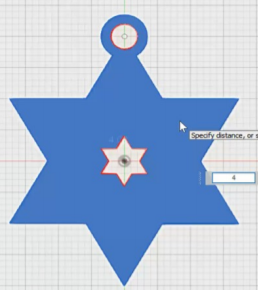

Computer Aided Design
2D Raster

Raster graphics are bitmaps. A bitmap is a grid of individual pixels that collectively compose an image. Raster graphics render images as a collection of countless tiny squares. Each square, or pixel, is coded in a specific hue or shade.Raster graphics are best used for non-line art images; specifically digitized photographs, scanned artwork or detailed graphics. Non-line art images are best represented in raster form because these typically include subtle chromatic gradations, undefined lines and shapes, and complex composition.However, because raster images are pixel-based, they suffer a malady called image degradation.For photo editing, I would use either Photoshop or Gimp. Most of the times I would use Photoshop. To crop your picture, there is a tool called Crop Tool. It can be found from the Toolbar section. The crop boarders display on the edges of the photo. You can also specify the Crop options using the Control bar. You can choose the size or ratio for the crop box to adjust the size and proportions of the picture.

Similarly to Crop tool, you can also change resolution using Photoshop. You simply click the Image menu, click Image Size then make the adjustments to the height or width to the Pixel Dimension fields. Use the resample settings to adjust for changes to the image size or for printing.
2D Vector
Vector graphics are based on mathematical formulas that define geometric primitives such as polygons, lines, curves, circles and rectangles. Because vector graphics are composed of true geometric primitives, they are best used to represent more structured images, like line art graphics with flat, uniform colors. Most created images meet these specifications, including logos, letterhead, and fonts.
For drawing shapes and lines, I would normally use Illustrator or Photoshop. To draw shapes, there is a Tool bar that you can use to draw. The picture above shows you where to locate the different shape tools for you to draw your shapes and lines.
You can also add text in Illustrator. Illustrator uses area to type out our text. Example shown above. Just select the letter "T" at the Tool bar and you can draw an area to type out your text in it. When text reaches a boundary, it will automatically wraps to fit inside the defined area.
Image Trace lets you convert raster images (JPEG, PNG, PSD etc.) to vector artwork. Using this feature, you can easily base a new drawing on an existing piece of artwork by tracing it. For example, you can convert the image of a pencil sketch you've drawn on paper into vector artwork using Image Trace. To do so you just have to choose Object > Image Trace > Make to trace with default parameters. Illustrator converts the image to black and white tracing result by default. Click the Image Trace button in the Control panel or the Properties panel, or select a preset from the Tracing Presets button. Choose Window > Image Trace or switch to the Tracing workspace to open the Image Trace panel. This will change your chosen image to be a vector image. Now you can save as SVG for your image.
3D Shapes
I also have learned how to make 3D shapes using Fusion 360. It is quite simple to understand and very easy to use.

Firstly, you need to make 2 triangles shapes using the polygon sketch. Align in such that the triangle shapes into a star shape. Then use the Trim tool to remove the lines so that your star shape will be complete. Then use offset so that to create a mini star at the middle of the big star. Next, draw another circle at the top of the star to create the hanger for the star shape. Lastly, extrude the entire shape to 4mm in height so it would look like a 3D shape. Next, draw another circle of 16mm diameter on the middle of the star shape as a guideline to draw the cylinders for decoration. Once you create the circle, create cylinder on the lines of the circle. To duplicate the cylinders, choose Create > Pattern > Circular Pattern. Make sure to select body. Duplicate it to 6. Make another shape called Spheres. Do the same step as the cylinders. Lastly, to bevel the edges of the hanger, select Modify Fillet, then select the circular part of the hanger and put a diameter of 1mm and you have finished your star shape decoration! To refer again you can go to Star Shape Decoration.
3D Laser Cutting
In this lesson of 3D Laser Cutting, I have learned on how to use parameters. It is quite simple as you can repeatedly use the stored parameters set by you. This will make my designing faster as I have already pre-set the value of parameters that I saved. This lesson also helped me learned on how to use midplane such that I can make it a mirror object. This lesson also helped me save more time because rather than sketching all over again, I can use this method of constructing a midplane and mirror it to build a repetitive object. This is useful if my design requires to make repetitive design.